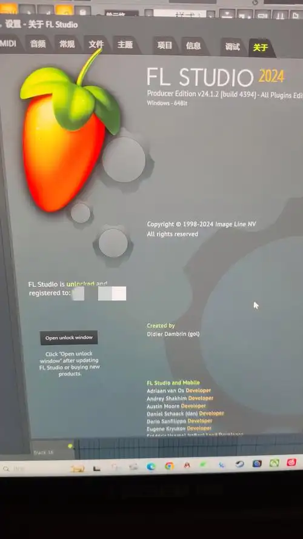

技能树 作编曲

我的编曲技能：FL Studio 基础创作
节奏架构
熟练运用 步进音序器（Step Sequencer） 设计鼓点，搭建稳定的节拍骨架（如 Hip-hop、电子舞曲节奏型）。
通过 切片工具（Slicex / Fruity Slicer） 处理采样鼓组，快速生成动态打击乐。
和声与旋律
使用 钢琴卷帘窗（Piano Roll） 编写基础和弦进行（如流行乐常用 I-V-vi-IV 走向）。
设计简洁抓耳的合成器旋律线（常用插件：Sytrus, GMS, Flex）。
"我喜欢：作曲和编曲。将心中的语言转换为音乐表达"